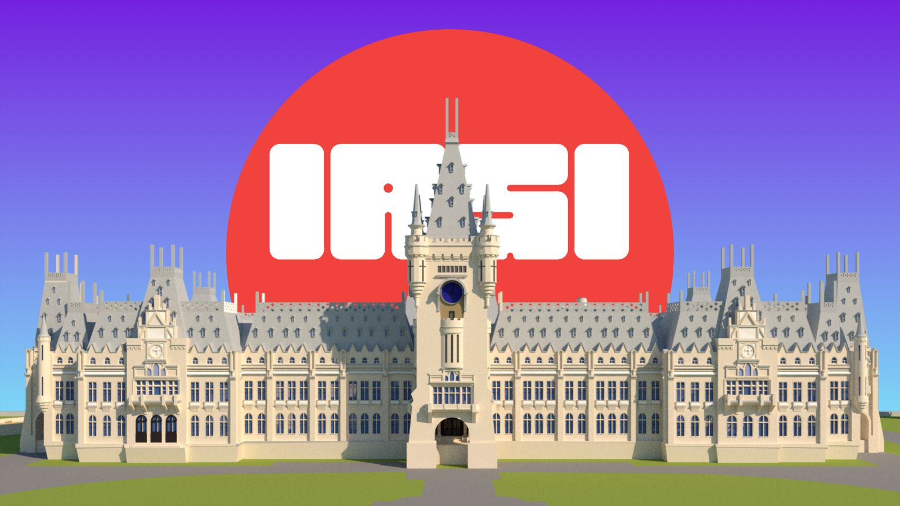
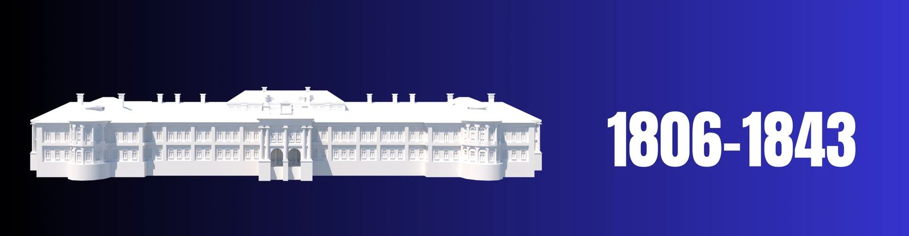
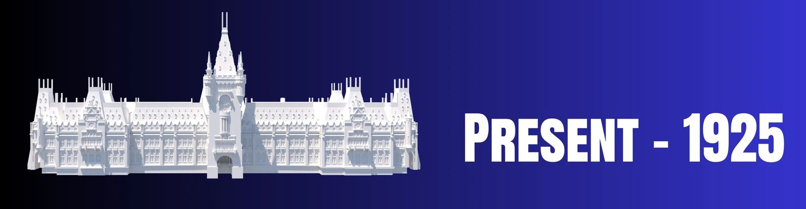

Clay renders of each historical version of the building, used to compare how the facade and the volumes changed over two centuries.
Environment · Architectural 3D
Palace of Culture: Four Eras in 3D
The building on the site of the Princely Court, modelled era by era, from the 1806 palace to the Palace of Culture we know today.

Made with


Chapter 1
1806 – 1843

Chapter 2
1843 – 1883
Chapter 3
1883 – 1925
Chapter 4
1925 – today
